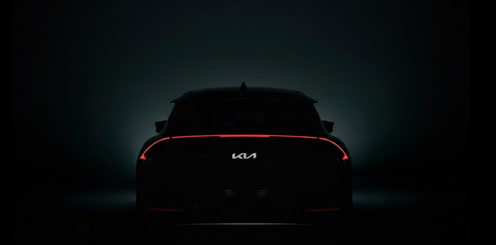
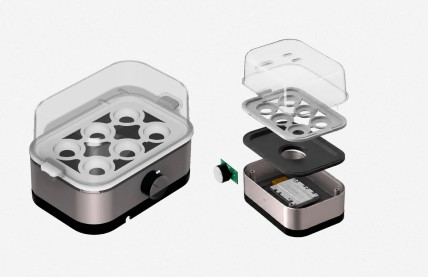
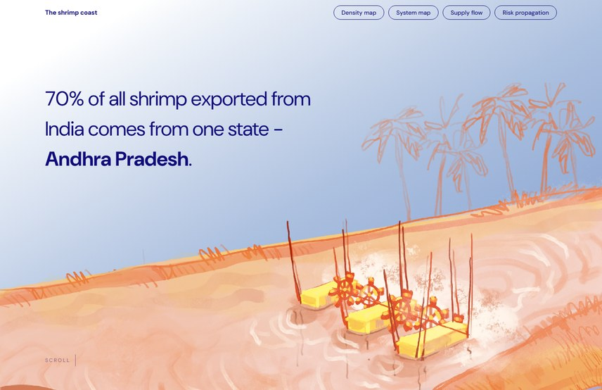
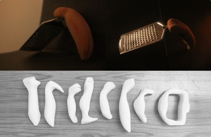
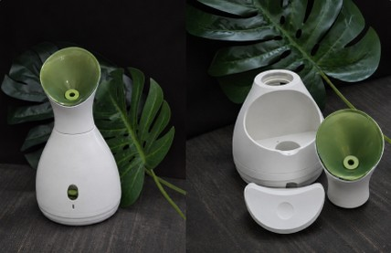
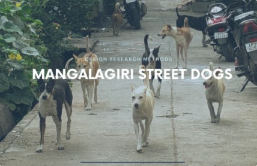
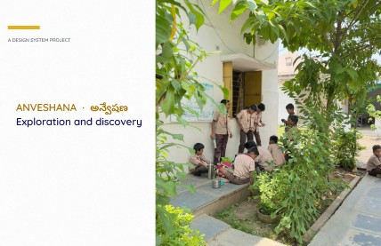
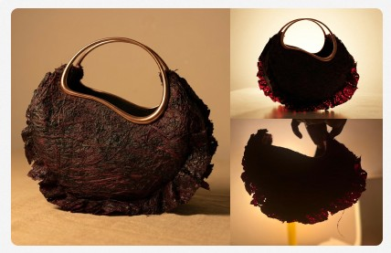

Featured works
Breastfeeding support for new mothers · 2025
Product DesignErgonomic DesignPrototyping
Voice navigation for delivery riders · 2026
UX ResearchInteraction DesignVUI Design
A breath companion for weight maintenance · 2026
Product DesignInteraction DesignElectronics
Hospital wayfinding for first-time rural visitors
UX ResearchInteraction DesignSystem Design

Colour, material and finish · 2025
CMF DesignAutomotive
More work

Teardown and redesign for fewer parts and screws · 2025
DFADFM

Bhimavaram shrimp farming, from hatchery to export, as a scroll story · 2026
System VisualisationData Storytelling

Handle redesign, tested on 4 users for pulse, SpO₂, BP and time · 2025
ErgonomicsUser Testing

Working replica in heat-bent PVC and vacuum-formed parts · 2024
PrototypingVacuum Forming

Field research in a team of 7: 88 dogs counted, 15 sterilised · 2025
Design ResearchSystems

Helping Classes 6–8 discover their interests and learn by thinking for themselves · 2026
System DesignEducation

Thirteen experiments on sugarcane, stalk to fibre composite · with Rashmi Ray · 2026
Material Driven DesignMaterial Research
Contact me
If you’d like to talk about a project, a role, or anything in these case studies, write to me.